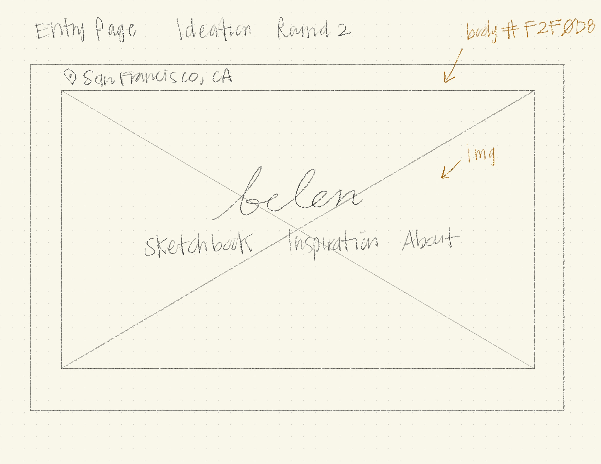
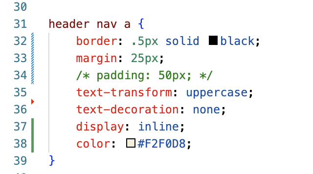
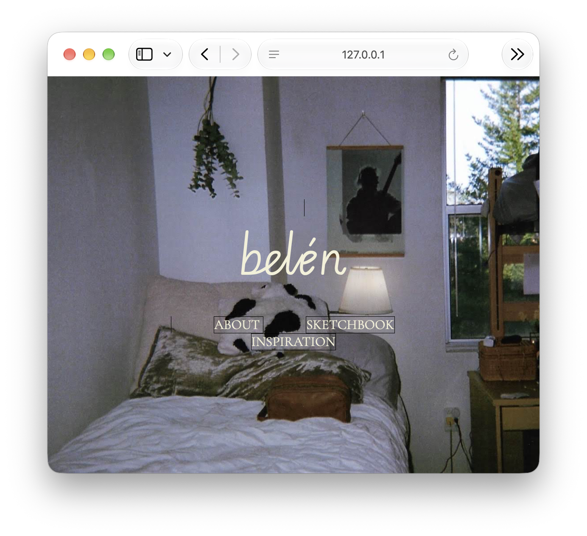
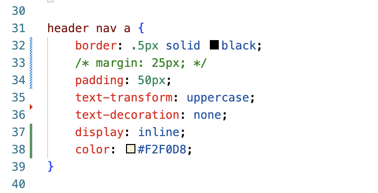
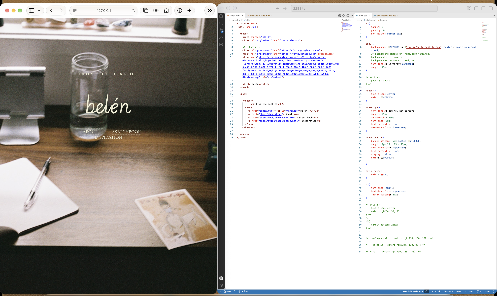
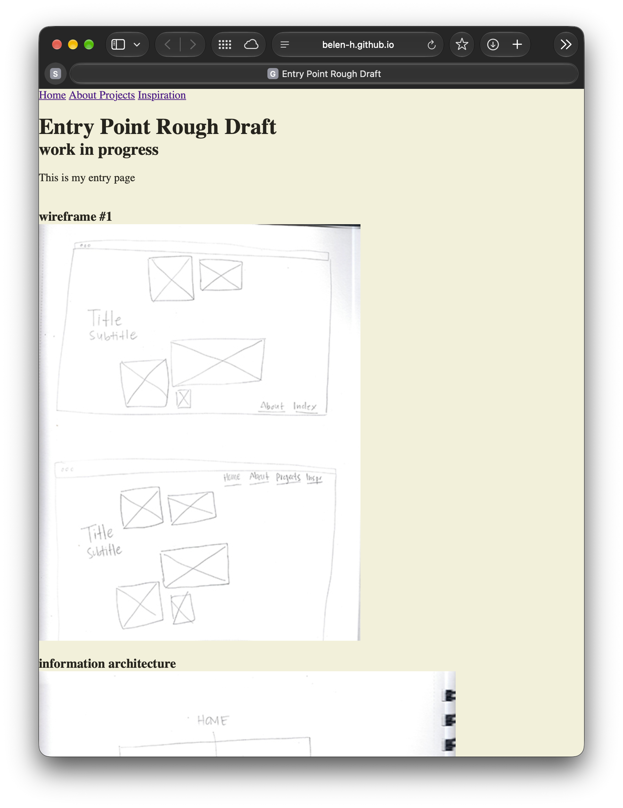
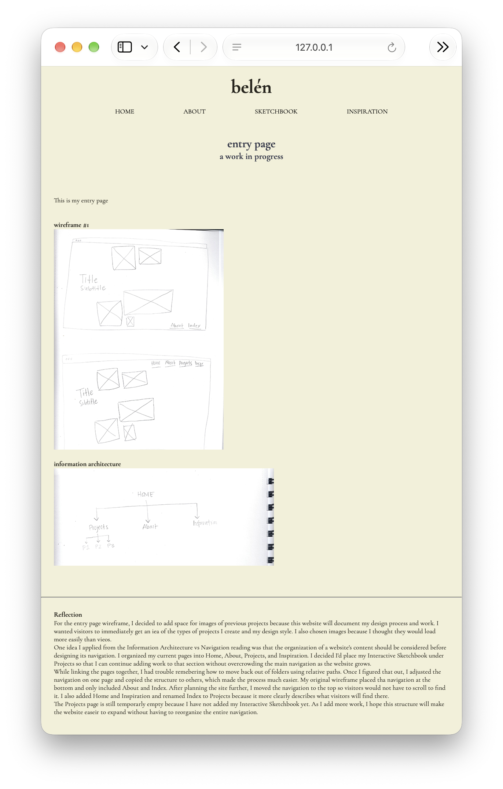

Step Four
September 30, 2026
When I first published my site to GitHub Pages, I was excited that it worked on the first try. Everything appeared online just as it did when I was working locally in Visual Studio Code. The problems started later when I made changes to my site and tried to publish the updated version. Even though I was saving my work, the live website stayed exactly the same as my initial upload. I kept seeing failed deployment notices without understanding what I had changed or why it suddenly stopped working. It was extremely confusing and honestly made me feel a little defeated.
After looking further into GitHub and the failed deployment messages, I discovered that at some point I had accidentally made my pageTwo folder its own Git repository. GitHub then treated that folder as a submodule and could not find the information it needed when trying to build my site. I found the hidden git folder inside pageTwo, removed it, and then had to change how the main repository recognized that folder so it became a normal part of my website again.
After fixing it, I finally got a green check on the GitHub Pages deployment and my updated site appeared with everything working again. Through this hiccup, I learned that saving in Visual Studio Code, committing changes, pushing them to GitHub, and deploying the live website are separate steps. I also understand my file structure much better now because one folder being set up incorrectly was enough to prevent the entire site from updating.
Step Three
September 29, 2026
Looking back at my original Point of Entry wireframe, I realized that I no longer liked the layout of my wireframes. However, the information architecture has stayed mostly the same even as I have added more pages to my Sketchbook. Originally, I imagined having several images scattered around the page, with the title and subtitle toward the left and the navigation at the bottom or top right. That no longer made sense for how I wanted someone to enter the site.


For my new wireframes, I simplified the idea to one main visual with my name and navigation centered over it. I ended up using a photograph of my own desk as the background. I like that it introduces the idea of the website as a personal desk containing the types of things I am creating and collecting, such as a journal, sketchbook, notes, and inspiration. I also added “from the desk of” above my name to make that idea clearer.

While building the page, I learned how to use the CSS background shorthand to position and size the image. I also experimented a lot with margin and padding to position the navigation. One thing that helped was temporarily putting borders around elements so I could actually see their boxes while adjusting the spacing.




I also realized that because the photograph is a CSS background rather than an HTML image, I cannot give it alt text. That made me think more carefully about using an image for atmosphere rather than relying on it to communicate information that a visitor needs to understand the page.
For now, I really like how simple the Point of Entry feels. As the Sketchbook grows, I want to see whether this desk idea can continue into the other pages.

Step Two
September 23, 2026
This week I focused on making the navigation consistent across the main pages of my Interactive Sketchbook. I used the same typography, spacing, colors, and hover effect on each page. Once I applied it everywhere, the pages started to feel more connected and like they actually belonged to the same website. I also enjoyed looking at how other websites keep their navigation consistent and using some of those ideas to influence my own choices.
One of my biggest “aha” moments was finally understanding the difference between padding and margin. At first, I was using them pretty randomly to get the spacing I wanted. I originally gave my navigation links around 80px of padding, but then I noticed that the hover effect would activate when my cursor was still really far away from the actual text. Once I realized padding adds space inside the element and margin adds space outside of it, everything made much more sense. I lowered the padding and used margin to create the larger spaces between my links instead.
I also decided that not every page needs the exact same navigation. In the Sketchbook page there is this page, the Checkpoint One page. Here I decided to keep the full navigation. However, for the other page under Sketchbook, the deeper CSS Practice page can have a simpler link back to its parent page.
There are still a few things I want to figure out. I would like to put my name, or maybe eventually a logo, on the same line as the navigation instead of above it. I also want the navigation to react when the browser gets smaller and eventually turn into a hamburger menu. I don't know how to do that yet, but it gives me something to work toward as I learn more CSS.

